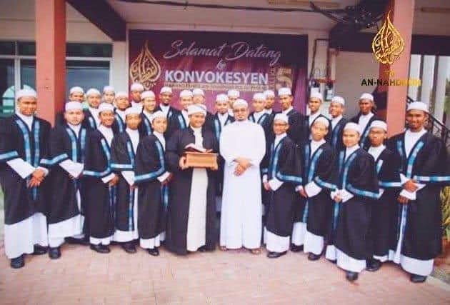
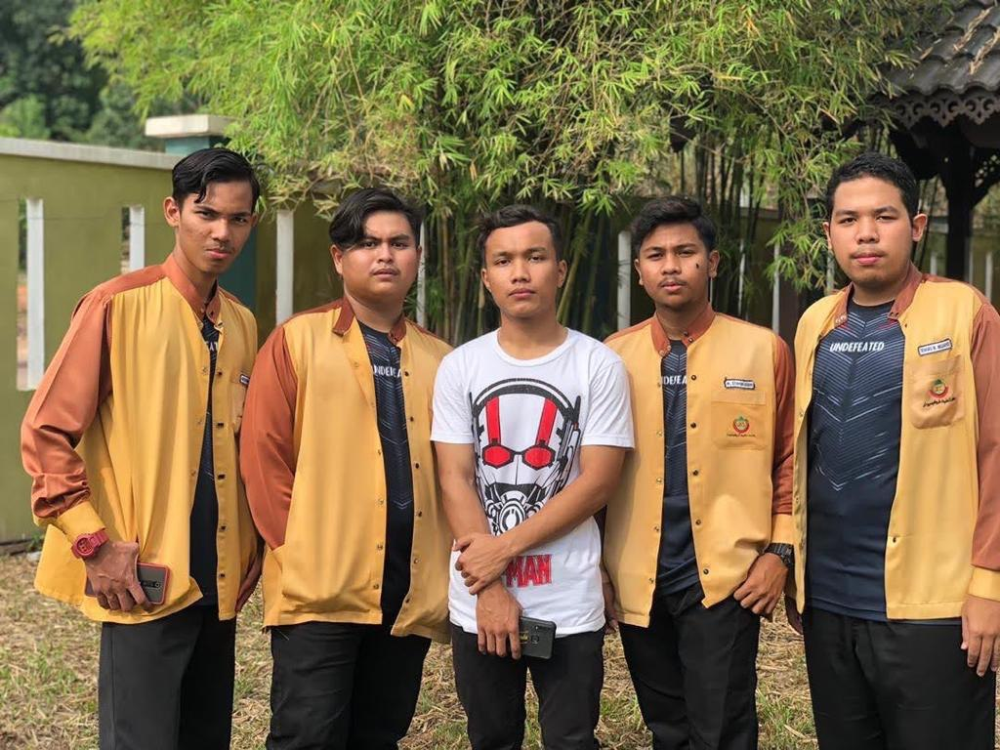
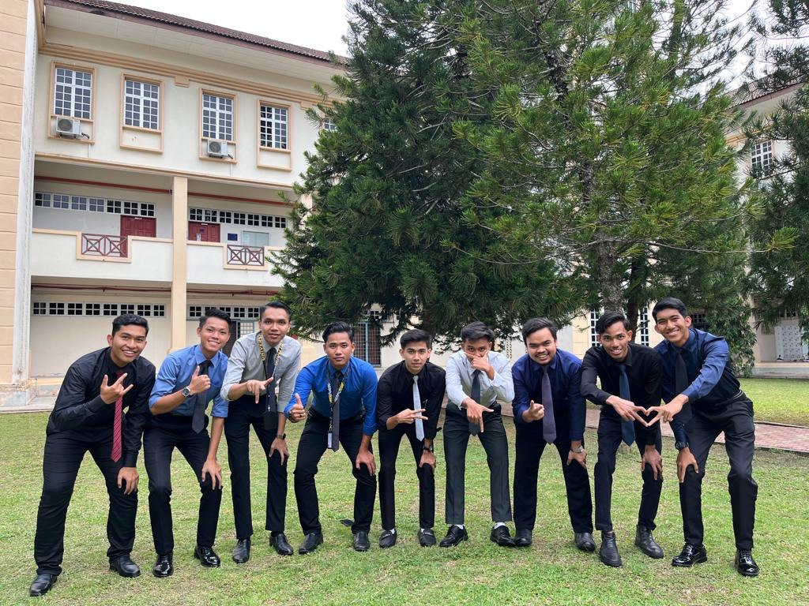

|  | Maahad Tahfiz An-Nahdhoh. Located in Bukit Mertajam, Penang. I went to school here from the age of 13 to 15. Alhamdulillah, with the encouragement given by my mother and father and teachers, I completed 30 juz at the age of 15 there. |
|  | Maahad Tahfiz Profesional is located in Bukit Kechil, Sungai Pasir. I spent 2 years here, from 2019 to 2021, to take SPM. Here is my SPM result: 5A, 1A+, 1A-, 1C+. |
|  | I continued my studies at Universiti Teknologi Mara, and now I am a Part 5 diploma student in information management. |